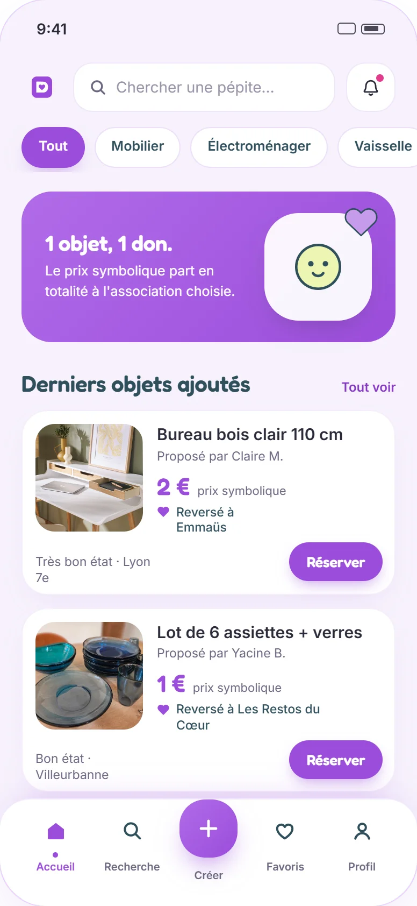
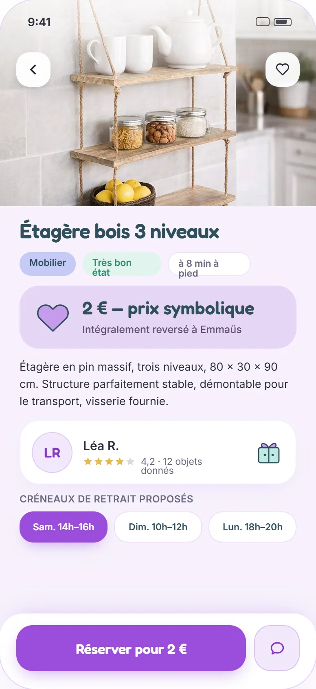
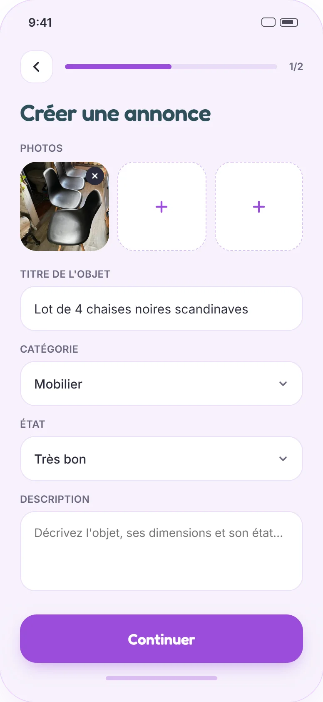
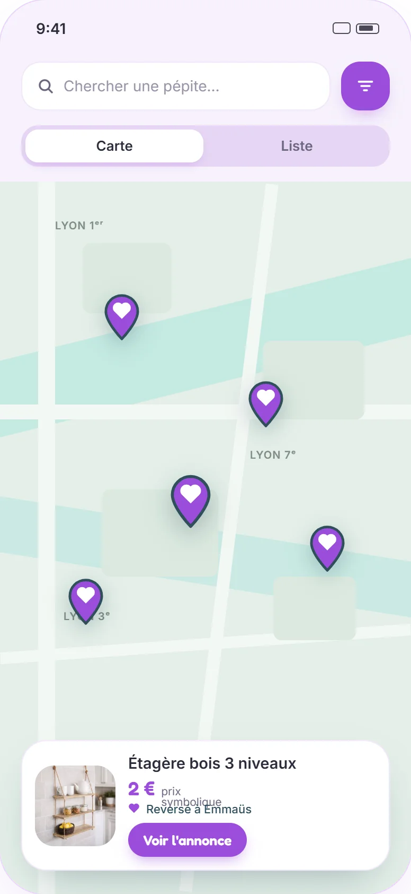

Le don pur ne marche pas
Sans engagement, un rendez-vous sur deux est annulé et l'objet reste chez vous.
Vous donnez un objet, vous fixez une participation solidaire, et l'essentiel part à l'association de votre choix.
doneo.web.app : ouvrir l'app Donéo, nouvel onglet

Sans engagement, un rendez-vous sur deux est annulé et l'objet reste chez vous.
Marchandage, lowballing, et l'impression de brader ce qu'on voulait offrir.
Une participation solidaire qui engage le preneur, et qui finit pour l'essentiel sur le compte d'une association.
Photo, titre, participation solidaire, association. C'est en ligne.
Vue carte ou vue liste, filtrée par distance à pied.
Le premier qui demande l'objet l'obtient et confirme en payant la participation. Fini la file de messages.
L'offrant fixe le créneau de retrait en publiant. Pas d'agenda à négocier.
Une conversation rattachée à l'annonce, jamais de numéro de téléphone à donner.
La preuve du versement à l'association arrive après chaque don.

« Il faut que tout parte avant le 30. »
Léa déménage dans trois semaines. Elle doit vider son appartement sans passer par la déchetterie, et préfère que ses meubles servent encore à quelqu'un.
« Je n'ai rien demandé à personne. »
Jérôme vient d'emménager dans un studio non meublé. Budget très serré, pas de voiture, et l'envie de ne pas se sentir assisté.
Une micro-commission est prélevée sur la participation pour couvrir les frais de fonctionnement. Le reste est reversé à l'association choisie par l'offrant.
Gratuit
Inscription et publication sans frais
Gratuit
Sans engagement
Sur devis
À partir de 290 € / campagne
Une micro-commission est prélevée sur la participation pour couvrir les frais de fonctionnement. Le reste est reversé à l'association choisie par l'offrant.
Au moment de publier, vous choisissez l'association qui recevra l'essentiel de votre participation solidaire.
Emmaüs
Lutte contre l'exclusion et réemploi solidaire
Les Restos du Cœur
Aide alimentaire et accompagnement
Secours Populaire
Solidarité de proximité toute l'année
La Croix-Rouge française
Urgence, secourisme et action sociale
Les Petits Frères des Pauvres
Contre l'isolement des personnes âgées
Le Secours Catholique
Accompagnement des familles en précarité
Léa R.
Offrante, Lyon 7e
« J'ai publié mon étagère un dimanche soir, elle était réservée deux heures plus tard. Le gars est venu, pour de vrai. »
★★★★★Jérôme M.
Demandeur, Villeurbanne
« J'ai meublé mon studio en trois semaines pour moins de quinze euros. Et cet argent a soutenu Emmaüs. »
★★★★★Nadia B.
Responsable collecte, association bénéficiaire
« Des petits montants, mais réguliers, et surtout des offrants qui découvrent notre travail. »
★★★★★Témoignages illustratifs.
Parce qu'un don gratuit n'engage personne. Une participation solidaire de quelques euros suffit à garantir que le preneur se déplace vraiment, et cette somme finance une association.
L'association que vous avez choisie au moment de publier l'annonce, déduction faite d'une micro-commission de fonctionnement prélevée par Donéo.
Vous la fixez librement. Par principe, elle reste basse : ce n'est pas un prix de vente, c'est un geste solidaire.
Une fois le créneau passé, la réservation est annulée et la participation est remboursée. L'objet est aussitôt proposé à la personne suivante sur la liste d'attente.
Oui : vaisselle, électroménager, vêtements, livres, matériel informatique. Tout sauf les objets interdits à la revente et les denrées périssables.
Non, jamais. Donéo ne demande aucun justificatif de revenus. La participation solidaire remplace le dossier.
Si votre demande est arrivée la première, l'objet vous revient. Vous confirmez en payant la participation, puis vous venez au créneau fixé par l'offrant. L'adresse exacte s'échange par messagerie.
Chaque annonce affiche l'état déclaré et des photos réelles. Vous pouvez poser vos questions avant de réserver.
Oui. Si vous annulez, votre participation vous est remboursée et l'objet est proposé à la personne suivante.
Non. Le filtre de distance permet de ne voir que les objets accessibles à pied ou en transports.
Pas de téléchargement, pas de store : Donéo s'ouvre directement dans votre navigateur.
Ouvrir Donéo, nouvel onglet
Comment ça marche
Deux parcours, un seul objet qui change de mains.
Je photographie l'objet
Une photo, un titre, l'état réel. Deux minutes suffisent.
Je fixe une participation solidaire
Le montant est libre et reste bas par principe. Ce n'est pas un prix de vente, c'est un engagement.
Je choisis une association
Emmaüs, les Restos du Cœur, le Secours Populaire. C'est elle qui recevra l'essentiel de la participation.
Je remets l'objet
Au créneau que j'ai fixé. Le versement part automatiquement.
Je cherche autour de moi
Les objets disponibles à distance de marche, filtrés par catégorie.
Je demande l'objet
Le premier qui demande l'obtient. Je confirme en payant quelques euros de participation.
Je viens au créneau
Le créneau est fixé par l'offrant : je sais tout de suite si ça m'arrange.
Je récupère l'objet
À pied, à quelques rues. Et mes 2 € ont soutenu une association.

